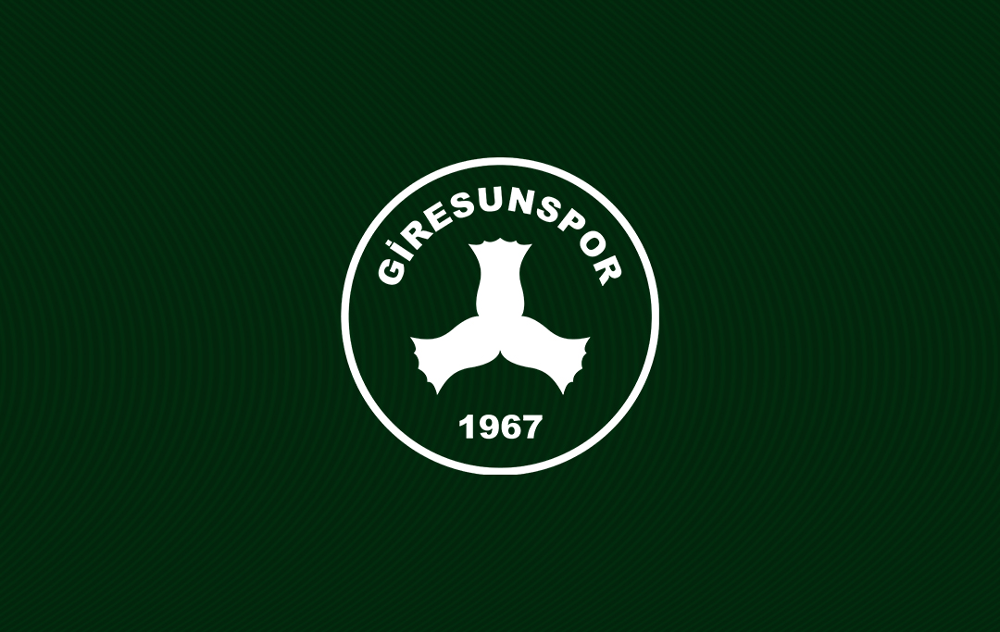
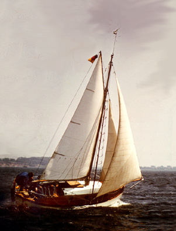
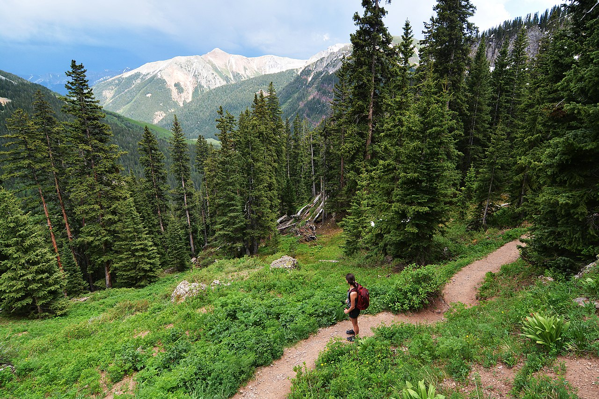
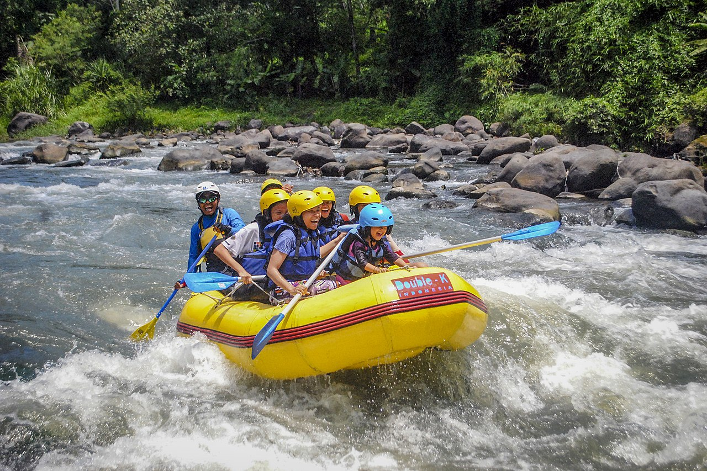
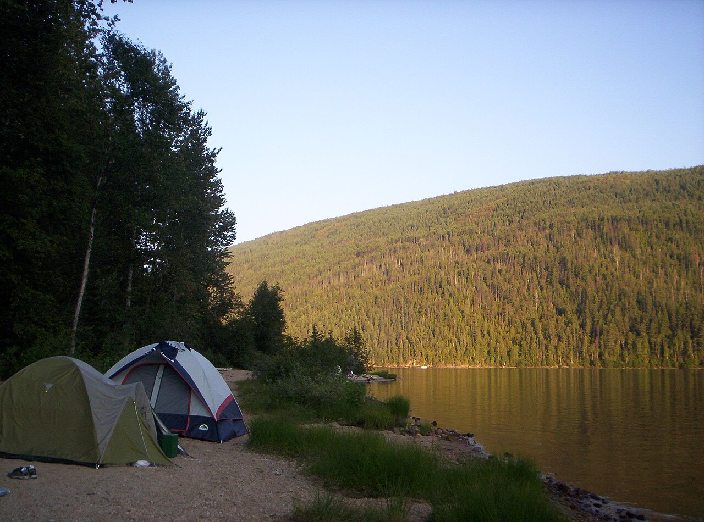
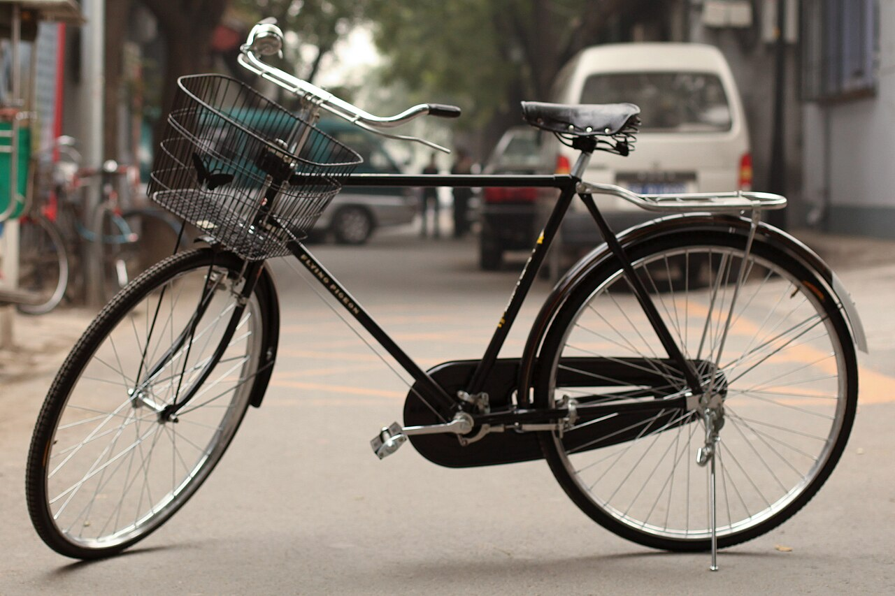
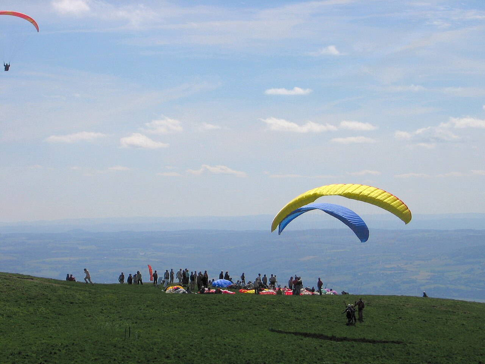

İşlem başarılı!
Bordo-siyah renkler, tek yürek taraftar kitlesi
Şehrin gururu, kalbimizin takımı

1925 yılında kurulan Giresunspor, bordo-siyah renkleriyle Giresun'un kalbidir. Süper Lig'de temsil ettikleri dönemlerde büyük stat deneyimleri yaşatan kulüp, şehrin vazgeçilmez kurumlarından biri olmaya devam etmektedir. "Karadeniz Fırtınası" lakabıyla rakiplerine korku salar.

Karadeniz'in güçlü rüzgarları, yelken ve kürek sporları için idealdir. Her yıl düzenlenen tekne yarışları yüzlerce sporcuyu bir araya getirir.

Karagöl-Sahara Milli Parkı'ndan Kümbet Yaylası'na uzanan 20'den fazla işaretli parkur, her seviyeden yürüyüşçüye hitap eder.

Yağlıdere ve Aksu çayları, rafting ve kano sporu için uygun parkurlar sunar. Adrenalin arayanlar için doğanın en heyecanlı aktivitesi.

Kümbet ve Kulakkaya yaylalarında ruhsal dinginlik sunan kamp alanları. Yıldızlı gökyüzü altında sabah kahvaltısı unutulmaz.

Karadeniz kıyı yolu ve dağ rotaları boyunca uzanan bisiklet parkurları, hem şehir turu hem de dağ bisikleti tutkunlarına hitap eder.

Giresun dağlarından kalkan paraşüt uçuşları, Karadeniz'in sonsuz mavisine kuş bakışı hâkim olma fırsatı sunar.